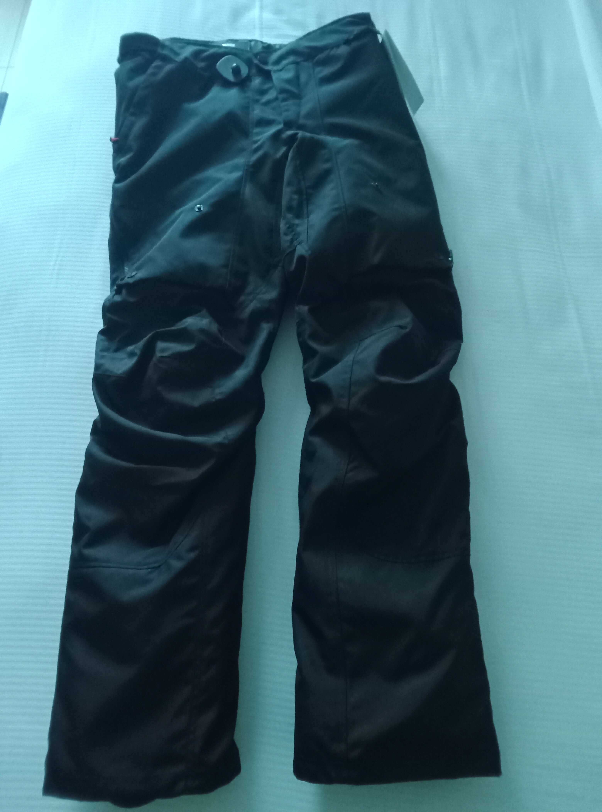

TROUSERS REVIEW
Revit Outback 4 H2O

These trousers are marketed as all season trousers which I paid $285 for. The trousers come fitted with armour for the knees. The trousers have both a separate waterproof and a separate thermal liner.
The trousers have two pockets that are secured with vertical zips on either hip and are reasonably sized. The trousers have an adjustable waist using elasticated straps held in place with Velcro but there is no front zip. Instead the trousers are widened where the front zip should be and this is then folded over and held in place by a plastic pop stud fastener. The bottom of the trousers are widened to allow boots to we worn inside them and the adjustment is again made by a flap secured in place by Velcro.
The thermal liner is held in place by small plastic pop studs around the inside of the trousers whilst the waterproof liner is held in place by zips. It would appear that the thermal liner is intended to be used inside the waterproof liner when both are being used.
On the thigh of each leg of the trousers is a vertical zip that allows a flap on the trouser leg to be opened to allow for ventilation. In the design of this feature, provision has been made to secure the flap when it is opened by using a plastic pop stud to fasten it to the trouser leg.
The things that I like about the trousers is limited to the ventilation flaps on the legs and the width of the trousers that easily allows boots to be used inside of them.
The things that I dislike about the jacket are as follows.
Firstly the cut of the trousers seem to have been made for humans with large buttocks as on me, whilst they fit at the waist, around my buttocks and thighs they look like horse riding jodhpurs. In other words, unlike normal trousers the hip size is not in proportion to the waist size and the leg length.
Secondly and perhaps my most important criticism is about the separate waterproof liner. To fit the liner you have to either to do it before the trousers are worn or you need to take the trousers off, fit the liner, and then put the trousers back on. Now I do not know who thought of this design but it was obviously not a biker who has travelled any great distance on a bike.
As all bikers know, depending on the season the weather can be very changeable. One minute you can be riding in sunshine and a few minutes later you can be riding in a thunderstorm. For these trousers to be used in such conditions you would have to either continuously wear them with the waterproof liner fitted or stop, remove your trousers and boots at the side of the road, fit the waterproof liner in to the trousers, then put them and your boots back on.
My Third criticism of these trousers concerns the absence of a frontal zip. If they were constructed with the waterproof layer as an integral part of the trousers then the absence of a frontal zip would make sense, but as the trousers are not waterproof without fitting the internal waterproof layer, then this design element in the trousers makes no sense.
In my opinion these trousers, whilst functional at a basic level, are an example of a bad product design especially as they are marketed as suitable for “Adventure touring” which in my experience requires clothing that can be worn in dry or wet conditions without having to worry about fitting a waterproof inner lining if the weather changes whilst you are riding a bike.
Once I have worn these trousers in the rain with the waterproof liner fitted I shall update this review as appropriate.